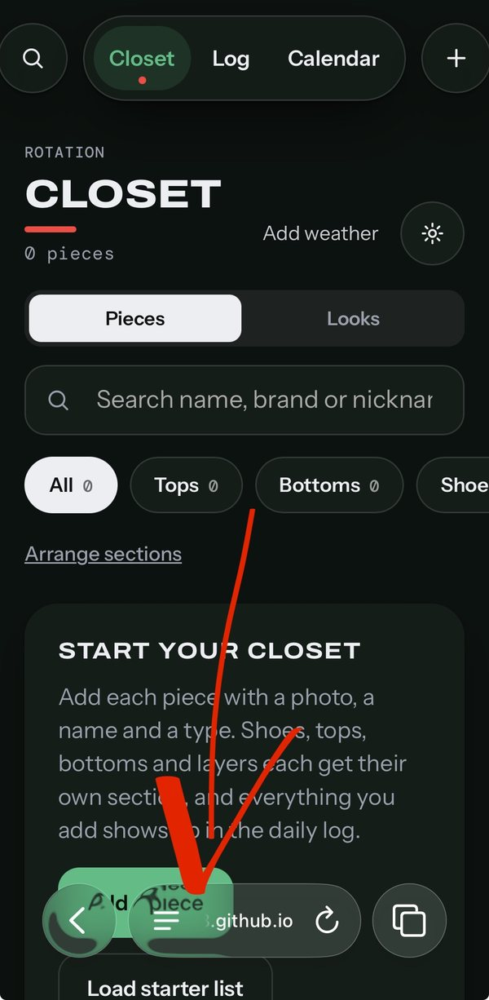
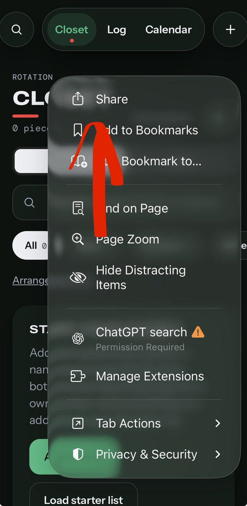
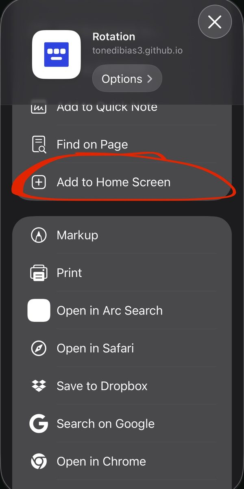
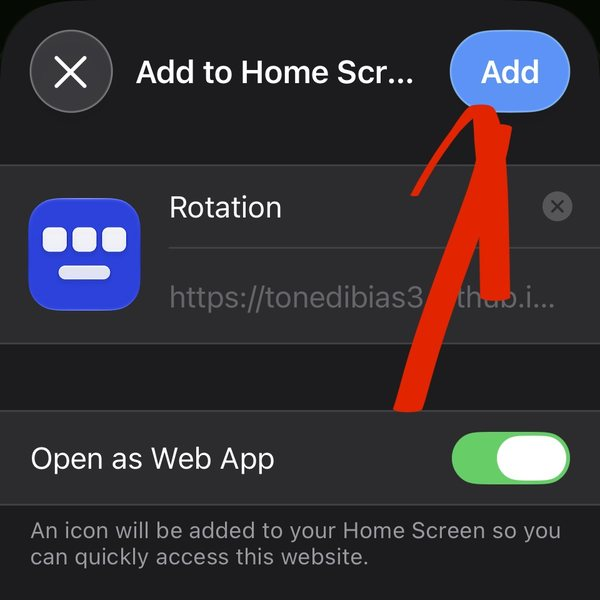
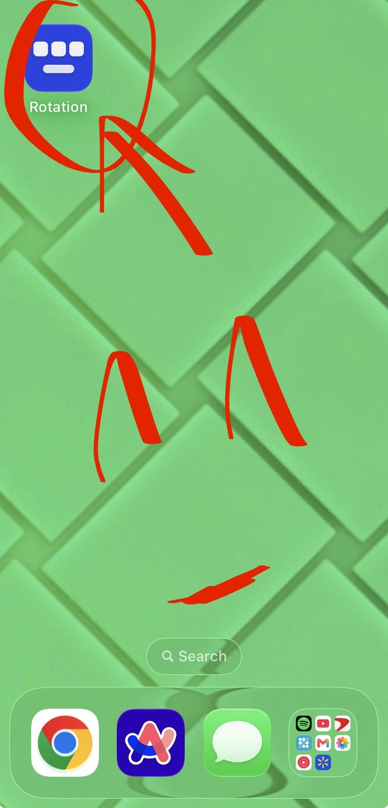

iPhone and iPad
- 1
Open the link in Safari
Use Safari, not Instagram or another in-app browser. If you tapped the link in a bio or message, tap the compass or the three dots and choose Open in Safari.

- 2
Open the menu and tap Share
Tap the menu button at the bottom left of the address bar, then tap Share. On older versions of iOS, tap the Share button instead, the square with an arrow pointing up.

- 3
Tap Add to Home Screen
Scroll down the share menu until you see it. If you do not see it, tap Edit Actions and add it.

- 4
Tap Add
Keep the name Rotation, leave Open as Web App switched on, and tap Add in the top right. The icon now sits on your Home Screen.

- 5
Open Rotation from your Home Screen
Always open it from the icon, not from Safari, so your closet stays in one place.

Android
- 1
Open the link in Chrome
Tap the link, then open it in Chrome if it opened somewhere else.

- 2
Tap the three dots
They are in the top right corner of Chrome.

- 3
Tap Add to Home screen or Install app
Then tap Install or Add to confirm.

- 4
Open Rotation from your Home Screen
Use the icon from now on.